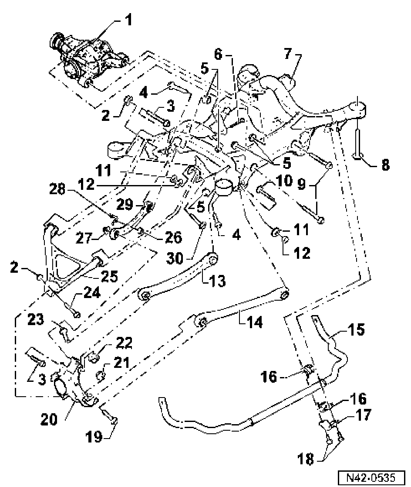

Rear Subframe, Stabilizer Bar, Control Arm, Assembly Overview
I - Subframe, stabilizer bar, control arm, assembly overview
Note:
^ When a component with a bonded rubber mounting is replaced or nuts/bolts/screws of such a component are loosened the respective wheel bearing housing must be brought into the unladen (empty) position before fasteners are tightened.

1. Final drive
^ Removing and installing
go to Final Drive, removing and installing
2. Self-locking nut
^ M14 x 1.5
^ Always replace
3. Hex head bolt
^ M14x1.5x110
^ 150 Nm plus an additional 1/4 turn (90°)
^ Always replace
4. Hex bolt
^ M12 x 1.5 x 70
^ 90 Nm plus an additional 1/4 turn (90°)
^ Always replace
5. Self-locking nut
^ M12 x 1.5
^ Always replace
6. Hex bolt
^ M12 x 1.5 x 90
^ 90 Nm plus an additional 1/4 turn (90°)
^ Always replace
7. Subframe
^ Removing and installing go to Subframe: Service and Repair.
8. Hex bolt
^ M14 x 1.5 x 135
^ 100 Nm plus an additional 1/2 turn (180°)
^ Always replace
9. Hex bolt
^ M12 x 1.5 x 90
^ 90 Nm plus an additional 1/4 turn (90°)
^ Always replace
10. Eccentric bolt
^ M14 x 1.5 x 82
11. Self-locking nut
^ M14 x 1.5
^ 180 Nm
^ Always replace
12. Eccentric washer
13. Upper rear link
14. Tie rod
15. Stabilizer bar
16. Rubber bushing
17. Clamp
18. Hex bolt
^ M10x25
^ 40 Nm
19. Hex head bolt
^ M16 x 1.5 x 125
^ 150 Nm plus an additional 1/4 turn (90°)
^ Always replace
20. Wheel bearing housing
^ Different versions for 16" and 17/18" wheels
21. Self-locking nut
^ M16 x 1.5
^ Always replace
22. Self-locking nut
^ M16 x 1.5
^ Always replace
23. Hex bolt
^ M16 x 1.5 x 125
^ 150 Nm plus an additional 1/4 turn (90°)
^ Always replace
24. Hex head bolt
^ M14 x l.5 x 110
^ 150 Nm plus an additional 1/4 turn (90°)
^ Always replace
25. Lower control arm
26. Self-locking nut
^ M6
^ 8 Nm
^ Always replace
27. Self-locking nut
^ M14 x 1.5
28. Bracket
29. Upper front link
30. Eccentric bolt